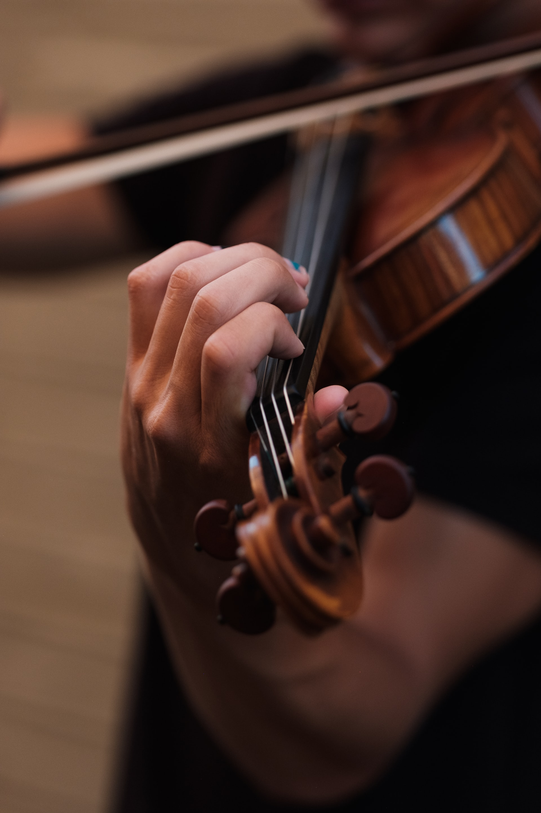

The string section of the orchestra begin around 4500 years ago. The first instrument was called the Lyres of Ur. The first bowed instruments were probably developed in Asia. This instrument was the forunner of the Indian folk instrument known as the Ravanastron. In the middle east the Ravanastron evolved into the Rebab, which was a two string fiddle. The Rebab inlfuenced the design of the grandfather to the modern violin - the bisinteen lira. The immediate relative to the modern violin was the Lira da Braccio. This instrument reached its peak popularity in the Renaissence ear, which was 1450 - 1600. It was commonly uesd to accompany a poet. However, it disappeared by the mid 17th century. A more modern Italian stringed instrument was the Viola da Gramba, which was the anncestor of the modern cello. The names of both of the instruments mentioned refer to the way in which they are played, Braccio means Arm, and Gamba means Leg.